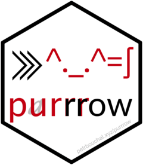

purrrow 
The goal of purrrow is to provide out-of-memory data collation into Arrow datasets.
It provides a set of functions with a logic similar to purrr, except that the result is an arrow dataset on disk. Each of these functions iterates the function passed to .f over .x and builds an arrow dataset on disk that contains all the data returned by .f as it iterates over .x.
For a primer on Arrow datasets and how to work with them in dplyr, see the vignette in Arrow (vignette('dataset', 'arrow')).
This has two advantages:
- it is shorthand compared to building and manually writing and then collating a bunch of arrow datasets
- compared to using
purrr::map_dfr()followed byarrow::write_dataset(), you do not need to have all the data in memory at one time; the binding into one dataset happens out of memory.
As in purrr, the functions come in multiple flavours, with a suffix indicating the output:
-
marrow_dir: returns the directory in which the resulting dataset is stored (which is also its.pathparam) -
marrow_ds: returns an arrowDatasetobject -
marrow_files: returns paths to all the files in the arrow dataset. This can be useful for tracking the files in make-like workflows, e.g.{targets}.
Installation
This is not yet on CRAN. You can install the development version from GitHub with:
# install.packages("remotes")
remotes::install_github("petrbouchal/purrrow")Examples
months <- unique(airquality$Month)
part_of_mpg <- function(month) {
airquality[airquality$Month==month,]
}
td <- file.path(tempdir(), "arrowmp")
aq_arrow_dir <- marrow_dir(.x = months, .f = part_of_mpg,
.partitioning = "Month",
.path = td)
library(arrow)
#>
#> Attaching package: 'arrow'
#> The following object is masked from 'package:utils':
#>
#> timestamp
open_dataset(aq_arrow_dir)
#> FileSystemDataset with 1 Parquet file
#> Ozone: int32
#> Solar.R: int32
#> Wind: double
#> Temp: int32
#> Month: int32
#> Day: int32
#>
#> See $metadata for additional Schema metadata
td <- file.path(tempdir(), "arrowmp2")
aq_arrow_ds <- marrow_ds(.x = months, .f = part_of_mpg,
.partitioning = "Month",
.path = td)
aq_arrow_ds
#> FileSystemDataset with 1 Parquet file
#> Ozone: int32
#> Solar.R: int32
#> Wind: double
#> Temp: int32
#> Month: int32
#> Day: int32
#>
#> See $metadata for additional Schema metadata
td <- file.path(tempdir(), "arrowmp3")
aq_arrow_files <- marrow_files(.x = months, .f = part_of_mpg,
.partitioning = "Month",
.path = td)
aq_arrow_files
#> [1] "/var/folders/c8/pj33jytj233g8vr0tw4b2h7m0000gn/T//RtmpmV4o8v/arrowmp3/part-0.parquet"Caveats and limitations
- no map2 and pmap equivalents yet
- unlike purrr’s map functions, purrrow’s marrow functions do not return an output of the same length as .x. This is intentional.
- currently only Hive-style partitioning is supported
TODO
- there is currently no way to pass further arguments to
arrow::write_dataset()
TODO
- unlike Arrow’s
write_dataset(),marrow_*()functions do not infer partitioning from grouping in the dataset returned by .f. This is intentional so as not to introduce confusion in the partitioning. - .f must provide the column which differentiates the rows returned by each iteration over .x - i.e. there is no equivalent to
purrr::*_dfr()’s.idparameter yet
TODO
- Note that arrow will happily write files for a new/differently partitioned dataset into the same directory, so you must take care to clear out/delete a directory before writing an arrow dataset into it.